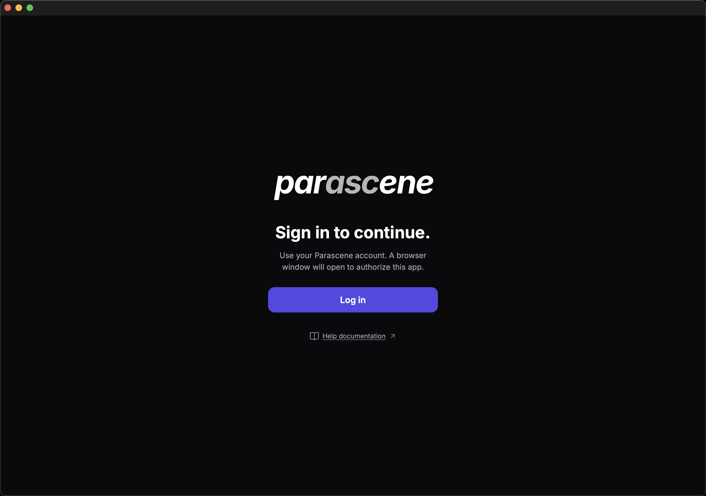

Getting started
We'll sign in, look at Library, check Sync, then start a project. Director and Editor appear after that project is open.
Sign in
- On the login screen, click Log in.
- Finish authorization in the browser, then return to the app. If the browser tab never finishes, click Cancel and try again.

Library
First sign-in opens Library, not Project. The top bar is Library, Sync, and Project. A new Parascene account already has one still on the board. The sidebar shows All assets 1 and Images 1. Showing 1 of 1 sits in the top bar.
Add from disk… is in the sidebar if you want files that are already on this computer.

Sync
Open Sync when you want to refresh from the cloud. Status says Ready and shows last synced. Sync newest is the usual later pull. Counts on a new account: 1 creation, 1 preview, 1 media, 0 folders.

Projects
Open Project. Recent is empty: No recent projects yet. Click New project.

Director
New project is named Untitled project and opens Director. Preview shows the project frame (16:9 by default). Set Aspect ratio on the right. Close project returns to the chooser. Director, Editor, and Publisher now appear in the top bar.

Editor
Click Editor. Assets has only the + tile (Add asset). Preview says Select an asset. The timeline is empty.

Click the + tile. New asset opens on Text to Image and System Parascene.

Where to go from here
Generate an image — same project, a prompt, and the still that comes back.